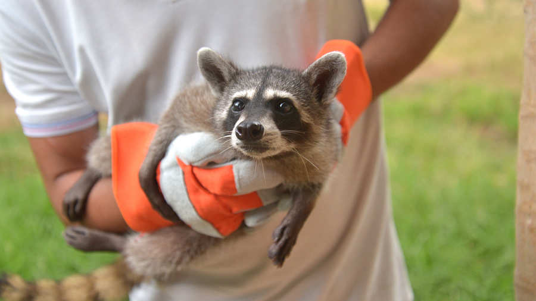
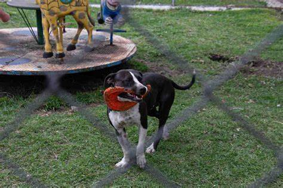
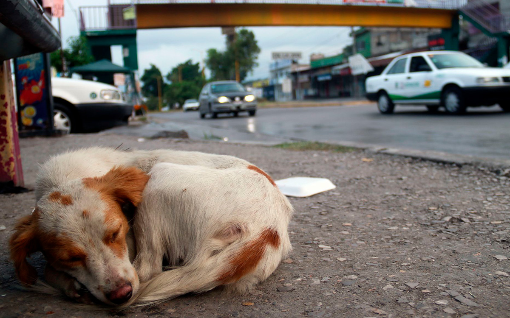

Protección a los animales
Nos dedicamos al rescate, adopción y cuidado de animales en situación de riesgo.
Nuestros Programas
Rescate
Nos enfocamos en el rescate de animales en situación de riesgo.
Adopción
Promovemos la adopción responsable de mascotas.
Esterilización
Ofrecemos servicios de esterilización para controlar la población animal.
Cómo puedes ayudar
Adoptar
Adopta a un animal rescatado y dale un hogar lleno de amor y cuidado. ¡Haz la diferencia!
Apadrinar
Si no puedes adoptar, puedes apadrinar a un animal.
Donar
Tu donación puede contribuir a mejorar las condiciones de vida de los animales rescatados. Cada aporte cuenta.
Historias de éxito
Max
Max fue rescatado de una calle peligrosa. Gracias a la adopción responsable, ahora vive feliz en un hogar lleno de cariño.
Luna
Luna pasó por un proceso de recuperación tras ser rescatada de una situación de maltrato. Hoy disfruta de una vida tranquila y segura.
Rocky
Rocky fue un perro abandonado en la vía pública. Con el apoyo de nuestros voluntarios, encontró una familia amorosa que lo cuida.
